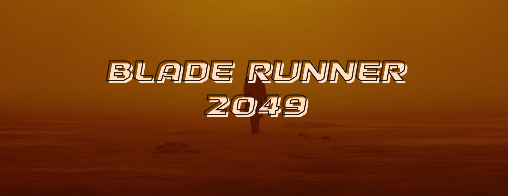

2017 | Runtime: 2h 43min | PG-13
SPOILER ALERT!
In 2049 Los Angeles, replicants, bioengineered humans used for slave labor, are hunted by special police officers called ‘blade runners’. K, an LAPD replicant blade runner himself, discovers the remains of a female replicant who died in childbirth, proving the impossible: that replicants can reproduce biologically. Fearing this knowledge could spark a war between humans and replicants, K's superior, Lt. Joshi, orders him to find and kill the child and destroy all evidence.
K begins to suspect he is the child himself after recognizing a childhood memory tied to the date “06.10.21” on a wooden toy horse. His investigation leads him to the Wallace Corporation, where he learns the deceased replicant was named Rachael, and that her child's identity was deliberately hidden by the Replicant Freedom Movement. Following the trail, K tracks down Deckard, a former blade runner and Rachael's partner, hiding in the radioactive ruins of Las Vegas. Deckard confirms he is the father of the missing child, but before K can act on his findings, the villainous Luv, an enforcer working for Wallace Corporation CEO, Niander Wallace, who wants the secret of replicant reproduction for himself, kidnaps Deckard and leaves K for dead.
Rescued by the Replicant Freedom Movement, K learns the truth: Rachael's child was not him, but a girl named Ana Stelline, a gifted replicant memory designer, whose own memory K had been carrying all along. K defeats Luv but Luv still managed to hurt K, frees Deckard, and quietly leads him to his long-lost daughter before dying on her doorstep.
Rotten Tomatoes: 89%
My rating: 3.9/5
As a sci-fi film, this was one of the films that impacted me the most. It became a very memorable experience. To this day, the quote that I still remember is: "Dying for the right cause is the most human thing we can do." It's a powerful message that resonates with the themes of identity and humanity in the film.
Visually, the film is stunning. Every scene is a unique blend of dystopian and futuristic aesthetics. Roger Deakins' cinematography is breathtaking, creating a world that is both beautiful and haunting. The use of lighting and color adds depth to the story, making it an immersive experience.
Performances from Ryan Gosling, Ana de Armas and Harrison Ford feel very natural and authentic. Gosling delivers a compelling performance as K, capturing the character's internal struggle and emotional depth. Ana de Armas brings warmth and vulnerability to her role as Joi, while Harrison Ford reprises his role as Deckard with a sense of nostalgia.
The soundtrack by the legendary composer Hans Zimmer is also worth mentioning. The music perfectly complements the mood and atmosphere of the film. The use of electronic elements in the score really sets the mood of a scene. The most notable track is "Tears in the Rain" where K realizes his fate as Deckard leaves him. The music adds an emotional weight to the scene, making it even more impactful.
I won't lie, the film does get a little confusing, especially if a viewer such as myself didn't watch the 1982 Blade Runner film. I did have to look up who these characters were after the movie ended, but that is one of the things I love about watching a sequel. I always get invested and suddenly, I am a #1 fan. It definitely took me more than one watch to fully grasp the plot, but when I did, it really hit. K is a character that sticks with you, and I think the film about identity and doing what's right is something very valuable and remarkable.